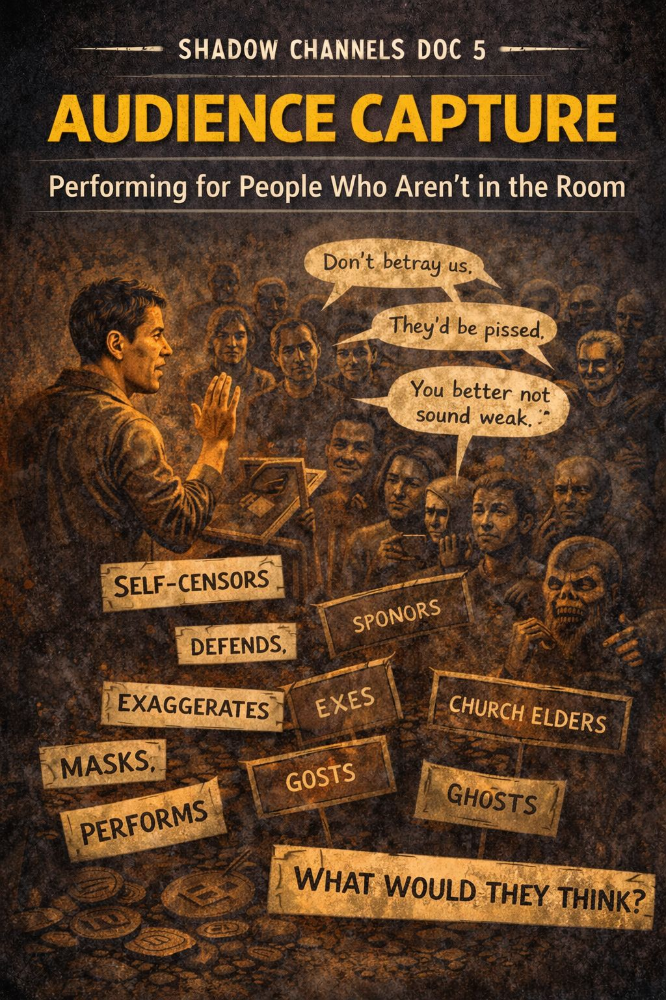

SHADOW CHANNELS DOC 5

AUDIENCE CAPTURE
Performing for People Who Aren’t in the Room
What It Is
Every identity has an audience attached to it.
Sometimes real.
Often imagined.
Always influential.
Audience Capture is when a person shifts their behavior
not in response to the conversation in front of them,
but to appease, impress, or avoid judgment from
the invisible crowd they believe is watching.
It is identity theater, staged inside the mind.
Why It Matters
Audience Capture makes authenticity impossible.
Instead of:
“What do I think?”
we ask:
“What will THEY think if I say it?”
Identity panic blooms when a person realizes they are acting
for a gallery they never consciously invited.
The performance becomes the prison.
Where It Shows Up
Listen for moments like:
- “I don’t want to sound like a traitor.”
- “They’re going to think I’m weak.”
- “My friends would roast me.”
- “My family would never forgive this.”
- “The people at the meeting would judge me.”
But also subtler:
- trying to sound smart
- trying to sound humble
- trying to sound loyal
- trying to sound spiritual
- trying to sound “recovered”
- trying to sound angry enough
- or patriotic enough
- or broken enough
- or healed enough
Your mouth moves,
but your words are being approved by an internal tribunal.
The Deep Structure
Audience Capture merges:
- Norm Debt (payment due)
- Narrative Gravity (stay in orbit)
- Armor Maintenance (protect the mask)
The imagined audience may include:
- friends
- parents
- exes
- sponsors
- church elders
- a political tribe
- the “people on Facebook”
- your old self
- your future self
- or ghosts you carry with you
The scariest audience?
People who aren’t paying attention at all.
How It Shapes Behavior
Audience Capture leads to:
- self-censorship
- exaggeration
- masked opinions
- social mimicry
- grandstanding
- over-agreement
- moral posturing
- “clap line” talking
- parroting group lingo
It causes people to:
- stay when they want to leave
- defend what they don’t believe
- attack what they don’t hate
- pretend to value what doesn’t feed them
Healthy Questions
- Who am I performing for right now?
- Did I ever choose this audience?
- Who gets silenced when they get a vote in my mouth?
- If the room were empty, what would I actually say?
- Whose approval is sitting in the driver’s seat of my identity?
Release Valves
Moments that break audience capture:
- sincere laughter
- private writing
- a friend who lets you be messy
- spaces without status
- AA shares told from the gut
- saying one risky sentence and surviving
- letting someone misunderstand you
- choosing honesty over applause
Signs You’ve Reclaimed Your Voice
Your speech:
- slows down
- softens
- becomes specific
- admits uncertainty
- sounds like you instead of “the tribe”
You feel:
- relief
- legroom
- oxygen
- unmonitored
This is the beginning of autonomy.
Application: One-Sentence Tool
“If I wasn’t performing, how would I sound right now?”
Shadow Channel Link
- Armor Maintenance is the costume.
- Audience Capture is the crowd clapping.
- Norm Debt is the ticket price.
- Exit Wounds appear when you fire the audience and walk offstage.
- Permission Cascades erupt when someone stops performing and speaks in their own voice.
Audience Capture isn’t vanity.
It’s survival training gone sideways.
Landing Reflection
Who is living rent-free in my voice today?
Index of Shadow Channels
← Back to Shadow Channels Index